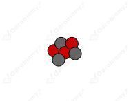
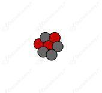

a)
Liczba atomowa jest równa liczbie protonów:
Liczba masowa to suma nukleonów:
Szukany pierwiastek to bor:
b)
Liczba atomowa wynosi:
Szukany pierwiastek to izotop magnezu:
c)
Liczba masowa wynosi:
Liczba masowa to suma neutronów i protonów. Obliczmy liczbę protonów w jądrze (liczbę atomową):
Szukany pierwiastek to kiur:
a)
Liczba atomowa (liczba protonów):
Liczba masowa (suma protonów i neutronów):
Szukany pierwiastek to tlen:
b)
Liczba atomowa (liczba protonów):
Liczba masowa (suma protonów i neutronów):
Szukany pierwiastek to bor:
c)
Liczba atomowa (liczba protonów):
Liczba masowa (suma protonów i neutronów):
Szukany pierwiastek to beryl:
Lit posiada w jądrze 3 protony. Liczba masowa to suma neutronów i protonów w jądrze pierwiastka. Izotop litu o liczbie masowej 6 musi posiadać 3 neutrony, a izotop o liczbie masowej 7 - 4 neutrony.


Kolorem czerwonym oznaczono protony, a szarym neutrony.
Liczba atomowa to liczba protonów w jądrze. Liczba masowa to suma protonów i neutronów w jądrze.
a)
Liczba atomowa izotopu:
Liczba masowa izotopu:
Liczba neutronów w jądrze tego izotopu:
b)
Liczba atomowa izotopu:
Liczba masowa izotopu:
Liczba neutronów w jądrze tego izotopu:
c)
Liczba atomowa izotopu:
Liczba masowa izotopu:
Liczba neutronów w jądrze tego izotopu:
Izotopy tego samego pierwiastka mają zawsze taką samą liczbę protonów (różnią się tylko liczbą neutronów). Niezjonizowane atomy zawsze mają liczbę elektronów równą liczbie protonów, zatem izotopy tego samego pierwiastka nie mogą różnić się liczbą elektronów.
Jądra różnych pierwiastków mogą mieć jednakową liczbę masową. Najczęściej zdarza się to dla pierwiastków sąsiadujących w układzie okresowym. Przykłady można wybrać z tabeli zamieszczonej w podręczniku na stronie 330 lub odnaleźć w układzie okresowym: